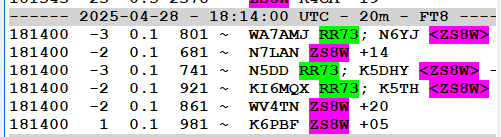

<!-- MHonArc v2.6.19+ -->
<!--X-Subject: Re: [NCDXC Chat] FW:  DX SPOT: ZS8W on 14.087 in FT8 at 2025&#45;04&#45;28 18:06:00Z (ZS8: Prince Edward &#38; Marion Islands) -->
<!--X-From-R13: &#60;ny.a6gnNtznvy.pbz> -->
<!--X-Date: Mon, 28 Apr 2025 13:41:45 &#45;0500 -->
<!--X-Message-Id: 025601dbb86d$2f4dde60$8de99b20$@gmail.com -->
<!--X-Content-Type: multipart/related -->
<!--X-Reference: 026701dbb868$ad0754d0$0715fe70$@gmail.com -->
<!--X-Reference: 52b19b92&#45;e3e0&#45;4efc&#45;c689&#45;d1f3a62eb56b@ko6lu.com -->
<!--X-Reference: 028a01dbb86c$13d50d30$3b7f2790$@gmail.com -->
<!--X-Reference: 02a201dbb86c$9af61980$d0e24c80$@gmail.com -->
<!--X-Derived: pngIxL1NYlWOh.png -->
<!--X-Derived: png89IynTMrWR.png -->
<!--X-Derived: png4ViXhWA1Zt.png -->
<!--X-Derived: png8JQt7AAqdJ.png -->
<!--X-Head-End-->
<!DOCTYPE HTML PUBLIC "-//W3C//DTD HTML 4.01 Transitional//EN"
        "http://www.w3.org/TR/html4/loose.dtd">
<html>
<head>

    <meta name="robots" content="noindex, nofollow">
<title>Re: [NCDXC Chat] FW:  DX SPOT: ZS8W on 14.087 in FT8 at 2025-04-28 18:06:00Z (ZS8: Prince Edward &amp; Marion Islands)</title>
<link rev="made" href="mailto:al.n6ta@gmail.com">
</head>
<body>
<!--X-Body-Begin-->
<!--X-User-Header-->
<!--X-User-Header-End-->
<!--X-TopPNI-->
<hr>
[<a href="msg39443.html">Date Prev</a>][<a href="msg39445.html">Date Next</a>][<a href="msg39443.html">Thread Prev</a>][<a href="msg39445.html">Thread Next</a>][<a href="maillist.html#39444">Date Index</a>][<a href="threads.html#39444">Thread Index</a>]
<!--X-TopPNI-End-->
<!--X-MsgBody-->
<!--X-Subject-Header-Begin-->
<h1>Re: [NCDXC Chat] FW:  DX SPOT: ZS8W on 14.087 in FT8 at 2025-04-28 18:06:00Z (ZS8: Prince Edward &amp; Marion Islands)</h1>
<hr>
<!--X-Subject-Header-End-->
<!--X-Head-of-Message-->
<ul>
<li><em>To</em>: &quot;'Mike Flowers'&quot; &lt;<a href="mailto:mike.flowers%40gmail.com">mike.flowers@gmail.com</a>&gt;,	&quot;'Chat NCDXC'&quot; &lt;<a href="mailto:chat%40ncdxc.org">chat@ncdxc.org</a>&gt;</li>
<li><em>Subject</em>: Re: [NCDXC Chat] FW:  DX SPOT: ZS8W on 14.087 in FT8 at 2025-04-28 18:06:00Z (ZS8: Prince Edward &amp; Marion Islands)</li>
<li><em>From</em>: &lt;<a href="mailto:al.n6ta%40gmail.com">al.n6ta@gmail.com</a>&gt;</li>
<li><em>Date</em>: Mon, 28 Apr 2025 11:41:37 -0700</li>
<li><em>Dkim-signature</em>: v=1; a=rsa-sha256; c=relaxed/relaxed;        d=gmail.com; s=20230601; t=1745865703; x=1746470503; darn=ncdxc.org;        h=content-language:thread-index:mime-version:message-id:date:subject         :in-reply-to:references:to:from:from:to:cc:subject:date:message-id         :reply-to;        bh=rnMdPlQsRWE7pmJNDMEZwRdZbIQZxft+TNGdCooNdD4=;        b=ShQMXKXTtbb9yKRufncRNuueROr4iscWTNPslXwVE22RYUCx22iWUiI0Dpl5czvrJ9         vvg6GC2x/ZYGau/6v4jq5Ms0i+hVLUgrZsXCf3folEfPQF5lzmvX3DeIFGj2y2BTOMsd         SaUNBRo93j01ztXaLnGTUkIzlqFIpvFgo9P9id7oXq6+UcRUk/XUDeIOIK6bWK8qDkTk         HOT38r2GX3y+g7shXRFQ/l/FvMbtlAGg8cSLbXX1cOIxXivmi+gPooPQZta0/2otUr6G         3MjCZfQ2QcDSI2zqs3uV5KTHMlVbKtmOCArbx1SCpCwzYj+DfQblTIrvnZnrHk4ZaYnn         kXCQ==</li>
<li><em>In-reply-to</em>: &lt;02a201dbb86c$9af61980$d0e24c80$@gmail.com&gt;</li>
<li><em>List-archive</em>: &lt;<a href="http://mail.ncdxc.org/mailman/private/chat_ncdxc.org/">http://mail.ncdxc.org/mailman/private/chat_ncdxc.org/</a>&gt;</li>
<li><em>List-help</em>: &lt;<a href="mailto:chat-request@ncdxc.org?subject=help">mailto:chat-request@ncdxc.org?subject=help</a>&gt;</li>
<li><em>List-id</em>: NCDXC Discussion List &lt;chat.ncdxc.org&gt;</li>
<li><em>List-post</em>: &lt;<a href="mailto:chat@ncdxc.org">mailto:chat@ncdxc.org</a>&gt;</li>
<li><em>List-subscribe</em>: &lt;<a href="http://mail.ncdxc.org/mailman/listinfo/chat_ncdxc.org">http://mail.ncdxc.org/mailman/listinfo/chat_ncdxc.org</a>&gt;, &lt;<a href="mailto:chat-request@ncdxc.org?subject=subscribe">mailto:chat-request@ncdxc.org?subject=subscribe</a>&gt;</li>
<li><em>List-unsubscribe</em>: &lt;<a href="http://mail.ncdxc.org/mailman/options/chat_ncdxc.org">http://mail.ncdxc.org/mailman/options/chat_ncdxc.org</a>&gt;, &lt;<a href="mailto:chat-request@ncdxc.org?subject=unsubscribe">mailto:chat-request@ncdxc.org?subject=unsubscribe</a>&gt;</li>
<li><em>References</em>: &lt;026701dbb868$ad0754d0$0715fe70$@gmail.com&gt; &lt;52b19b92-e3e0-4efc-c689-d1f3a62eb56b@ko6lu.com&gt; &lt;028a01dbb86c$13d50d30$3b7f2790$@gmail.com&gt; &lt;02a201dbb86c$9af61980$d0e24c80$@gmail.com&gt;</li>
<li><em>Thread-index</em>: AQJOEQQxsloPK9PdkDCpgy8qgJ1W4QI0pOOEAX9OsJcBobBl3bKqCqWw</li>
</ul>
<!--X-Head-of-Message-End-->
<!--X-Head-Body-Sep-Begin-->
<hr>
<!--X-Head-Body-Sep-End-->
<!--X-Body-of-Message-->
<table width="100%"><tr><td style="a:link { color: blue } a:visited { color: purple } "><div class=WordSection1><p class=MsoNormal><span style='font-size:12.0pt;font-family:"Aptos",sans-serif'>Yeah, those signal levels are very strange.&#xA0; I have sometimes seen a short peak and then gone, so it could be that.&#xA0; Two nights ago, at 9 PM, a 4X went from weak to -5 dB and then fell off the table in 2 minutes.<o:p></o:p></span></p><p class=MsoNormal><span style='font-size:12.0pt;font-family:"Aptos",sans-serif'>Al&#xA0; N6TA<o:p></o:p></span></p><p class=MsoNormal><span style='font-size:12.0pt;font-family:"Aptos",sans-serif'><o:p>&nbsp;</o:p></span></p><div><div style='border:none;border-top:solid #E1E1E1 1.0pt;padding:3.0pt 0in 0in 0in'><p class=MsoNormal><b>From:</b> Chat &lt;chat-bounces@ncdxc.org&gt; <b>On Behalf Of </b>Mike Flowers via Chat<br><b>Sent:</b> Monday, April 28, 2025 11:38 AM<br><b>To:</b> 'Chat NCDXC' &lt;chat@ncdxc.org&gt;<br><b>Subject:</b> [NCDXC Chat] FW: DX SPOT: ZS8W on 14.087 in FT8 at 2025-04-28 18:06:00Z (ZS8: Prince Edward &amp; Marion Islands)<o:p></o:p></p></div></div><p class=MsoNormal><o:p>&nbsp;</o:p></p><p class=MsoNormal><span style='font-size:14.0pt;color:#0E2841'>Hi Gang,<o:p></o:p></span></p><p class=MsoNormal><span style='font-size:14.0pt;color:#0E2841'><o:p>&nbsp;</o:p></span></p><p class=MsoNormal><span style='font-size:14.0pt;color:#0E2841'>My observations about working (perhaps) ZS8W on 14085 this morning.<o:p></o:p></span></p><p class=MsoNormal><span style='font-size:14.0pt;color:#0E2841'><o:p>&nbsp;</o:p></span></p><div><p class=MsoNormal><b><span style='font-size:12.0pt;font-family:"Aptos",sans-serif;color:#0070C0;mso-ligatures:standardcontextual'>- 73 and good DX de Mike, <a rel="nofollow" href="http://www.qrz.com/db/k6mkf/"><span style='color:#0070C0'>K6MKF</span></a>, <a rel="nofollow" href="http://ncdxc.org/"><span style='color:#0070C0'>NCDXC</span></a> Life Member</span></b><b><span style='font-family:"Aptos",sans-serif;color:#0070C0'><o:p></o:p></span></b></p><p class=MsoNormal><b><span style='font-size:12.0pt;font-family:"Aptos",sans-serif;color:#0070C0;mso-ligatures:standardcontextual'><o:p>&nbsp;</o:p></span></b></p></div><p class=MsoNormal><span style='font-size:14.0pt;color:#0E2841'><o:p>&nbsp;</o:p></span></p><div style='border:none;border-left:solid blue 1.5pt;padding:0in 0in 0in 4.0pt'><div><div style='border:none;border-top:solid #E1E1E1 1.0pt;padding:3.0pt 0in 0in 0in'><p class=MsoNormal><b>From:</b> Mike Flowers &lt;<a rel="nofollow" href="mailto:mike.flowers@gmail.com">mike.flowers@gmail.com</a>&gt; <br><b>Sent:</b> Monday, April 28, 2025 11:34<br><b>To:</b> 'Ko6Lu Bob Frostholm' &lt;<a rel="nofollow" href="mailto:bob@ko6lu.com">bob@ko6lu.com</a>&gt;<br><b>Subject:</b> RE: [NCDXC Chat] DX SPOT: ZS8W on 14.087 in FT8 at 2025-04-28 18:06:00Z (ZS8: Prince Edward &amp; Marion Islands)<o:p></o:p></p></div></div><p class=MsoNormal><o:p>&nbsp;</o:p></p><p class=MsoNormal><span style='font-size:14.0pt;color:#0E2841'>Hi Bob,<o:p></o:p></span></p><p class=MsoNormal><span style='font-size:14.0pt;color:#0E2841'><o:p>&nbsp;</o:p></span></p><p class=MsoNormal><span style='font-size:14.0pt;color:#0E2841'>I could hardly believe it.&nbsp;&nbsp; I was sitting on 14085 watching everyone and his brother call ZS8W, then this happened:<o:p></o:p></span></p><p class=MsoNormal><span style='font-size:14.0pt;color:#0E2841'><o:p>&nbsp;</o:p></span></p><p class=MsoNormal><span style='font-size:14.0pt;color:#0E2841'><o:p></o:p></span></p><p class=MsoNormal><span style='font-size:14.0pt;color:#0E2841'><o:p>&nbsp;</o:p></span></p><p class=MsoNormal><span style='font-size:14.0pt;color:#0E2841'>They were 18 then 20, so I called and they came back to me with an 8 signal giving me a +30!<o:p></o:p></span></p><p class=MsoNormal><span style='font-size:14.0pt;color:#0E2841'>My RR73 came with a -4 signal from them.<o:p></o:p></span></p><p class=MsoNormal><span style='font-size:14.0pt;color:#0E2841'><o:p>&nbsp;</o:p></span></p><p class=MsoNormal><span style='font-size:14.0pt;color:#0E2841'>It&#x2019;s 1826 and my last decode of them was at 1814:<o:p></o:p></span></p><p class=MsoNormal><span style='font-size:14.0pt;color:#0E2841'><o:p>&nbsp;</o:p></span></p><p class=MsoNormal><span style='font-size:14.0pt;color:#0E2841'><o:p></o:p></span></p><p class=MsoNormal><span style='font-size:14.0pt;color:#0E2841'><o:p>&nbsp;</o:p></span></p><p class=MsoNormal><span style='font-size:14.0pt;color:#0E2841'>Their signals then were -3 to 1.&nbsp;&nbsp; So I saw their signal strength degrade from a 20 to -3 in 10 minutes.<o:p></o:p></span></p><p class=MsoNormal><span style='font-size:14.0pt;color:#0E2841'><o:p>&nbsp;</o:p></span></p><p class=MsoNormal><span style='font-size:14.0pt;color:#0E2841'>I&#x2019;m inclined to think this might have been some weird sporadic E event if it&#x2019;s real, because we shouldn&#x2019;t have propagation there on 20M now:<o:p></o:p></span></p><p class=MsoNormal><span style='font-size:14.0pt;color:#0E2841'><o:p>&nbsp;</o:p></span></p><p class=MsoNormal><span style='font-size:14.0pt;color:#0E2841'><o:p></o:p></span></p><p class=MsoNormal><span style='font-size:14.0pt;color:#0E2841'><o:p>&nbsp;</o:p></span></p><p class=MsoNormal><span style='font-size:14.0pt;color:#0E2841'>The other explanation is that I&#x2019;ve been played by a slim, but WFWL!!&nbsp; <o:p></o:p></span></p><p class=MsoNormal><span style='font-size:14.0pt;color:#0E2841'><o:p>&nbsp;</o:p></span></p><div><p class=MsoNormal><b><span style='font-size:12.0pt;font-family:"Aptos",sans-serif;color:#0070C0;mso-ligatures:standardcontextual'>- 73 and good DX de Mike, <a rel="nofollow" href="http://www.qrz.com/db/k6mkf/"><span style='color:#0070C0'>K6MKF</span></a>, <a rel="nofollow" href="http://ncdxc.org/"><span style='color:#0070C0'>NCDXC</span></a> Life Member</span></b><b><span style='font-family:"Aptos",sans-serif;color:#0070C0'><o:p></o:p></span></b></p><p class=MsoNormal><b><span style='font-size:12.0pt;font-family:"Aptos",sans-serif;color:#0070C0;mso-ligatures:standardcontextual'><o:p>&nbsp;</o:p></span></b></p></div><p class=MsoNormal><span style='font-size:14.0pt;color:#0E2841'><o:p>&nbsp;</o:p></span></p><div style='border:none;border-left:solid blue 1.5pt;padding:0in 0in 0in 4.0pt'><div><div style='border:none;border-top:solid #E1E1E1 1.0pt;padding:3.0pt 0in 0in 0in'><p class=MsoNormal><b>From:</b> Ko6Lu Bob Frostholm &lt;<a rel="nofollow" href="mailto:bob@ko6lu.com">bob@ko6lu.com</a>&gt; <br><b>Sent:</b> Monday, April 28, 2025 11:19<br><b>To:</b> Mike Flowers &lt;<a rel="nofollow" href="mailto:mike.flowers@gmail.com">mike.flowers@gmail.com</a>&gt;<br><b>Cc:</b> <a rel="nofollow" href="mailto:bob@ko6lu.com">bob@ko6lu.com</a><br><b>Subject:</b> Re: [NCDXC Chat] DX SPOT: ZS8W on 14.087 in FT8 at 2025-04-28 18:06:00Z (ZS8: Prince Edward &amp; Marion Islands)<o:p></o:p></p></div></div><p class=MsoNormal><o:p>&nbsp;</o:p></p><p>Thanks for the spot.... I saw one burst of&nbsp; 9 simultaneous strong replies from them... then total silence <span style='font-family:"Segoe UI Emoji",sans-serif'>&#128577;</span><o:p></o:p></p><pre>73,<o:p></o:p></pre><pre><o:p>&nbsp;</o:p></pre><pre>Bob <o:p></o:p></pre><pre><o:p>&nbsp;</o:p></pre><pre>Ko6Lu<o:p></o:p></pre><div><p class=MsoNormal>On 4/28/2025 11:09, Mike Flowers via Chat wrote:<o:p></o:p></p></div><blockquote style='margin-top:5.0pt;margin-bottom:5.0pt'><p class=MsoNormal>ZS8W on 14.087 in FT8 at 2025-04-28 18:06:00Z (ZS8: Prince Edward &amp; Marion Islands)<o:p></o:p></p><p class=MsoNormal>&nbsp;<o:p></o:p></p><p class=MsoNormal>-4 into NorCal<o:p></o:p></p><p class=MsoNormal>&nbsp;<o:p></o:p></p><p class=MsoNormal>If this is really ZS8W, then I&#x2019;m stoked!!<o:p></o:p></p><p class=MsoNormal>&nbsp;<o:p></o:p></p><p class=MsoNormal><o:p></o:p></p><p class=MsoNormal>&nbsp;<o:p></o:p></p><p class=MsoNormal>&nbsp;<o:p></o:p></p><div><p class=MsoNormal><b><span style='font-size:12.0pt;color:#0070C0;mso-ligatures:standardcontextual'>- 73 and good DX de Mike, <a rel="nofollow" href="http://www.qrz.com/db/k6mkf/"><span style='color:#0070C0'>K6MKF</span></a>, <a rel="nofollow" href="http://ncdxc.org/"><span style='color:#0070C0'>NCDXC</span></a> Life Member</span></b><o:p></o:p></p><p class=MsoNormal><b><span style='font-size:12.0pt;color:#0070C0;mso-ligatures:standardcontextual'>&nbsp;</span></b><o:p></o:p></p></div><p class=MsoNormal>&nbsp;<o:p></o:p></p><p class=MsoNormal style='margin-bottom:12.0pt'><span style='font-size:12.0pt;font-family:"Aptos",sans-serif'><o:p>&nbsp;</o:p></span></p><pre>_______________________________________________<o:p></o:p></pre><pre>Chat mailing list<o:p></o:p></pre><pre><a rel="nofollow" href="mailto:Chat@ncdxc.org">Chat@ncdxc.org</a><o:p></o:p></pre><pre><a rel="nofollow" href="http://mail.ncdxc.org/mailman/listinfo/chat_ncdxc.org">http://mail.ncdxc.org/mailman/listinfo/chat_ncdxc.org</a><o:p></o:p></pre></blockquote></div></div></div></td></tr></table>
<!--X-Body-of-Message-End-->
<!--X-MsgBody-End-->
<!--X-Follow-Ups-->
<hr>
<!--X-Follow-Ups-End-->
<!--X-References-->
<ul><li><strong>References</strong>:
<ul>
<li><strong><a name="39442" href="msg39442.html">[NCDXC Chat] DX SPOT:  ZS8W on 14.087 in FT8 at 2025-04-28 18:06:00Z (ZS8: Prince Edward &amp; Marion Islands)</a></strong>
<ul><li><em>From:</em> &quot;Mike Flowers&quot; &lt;mike.flowers@gmail.com&gt;</li></ul></li>
<li><strong><a name="39443" href="msg39443.html">[NCDXC Chat] FW:  DX SPOT: ZS8W on 14.087 in FT8 at 2025-04-28 18:06:00Z (ZS8: Prince Edward &amp; Marion Islands)</a></strong>
<ul><li><em>From:</em> &quot;Mike Flowers&quot; &lt;mike.flowers@gmail.com&gt;</li></ul></li>
</ul></li></ul>
<!--X-References-End-->
<!--X-BotPNI-->
<ul>
<li>Prev by Date:
<strong><a href="msg39443.html">[NCDXC Chat] FW:  DX SPOT: ZS8W on 14.087 in FT8 at 2025-04-28 18:06:00Z (ZS8: Prince Edward &amp; Marion Islands)</a></strong>
</li>
<li>Next by Date:
<strong><a href="msg39445.html">Re: [NCDXC Chat] DX SPOT: ZS8W on 14.087 in FT8 at 2025-04-28 18:06:00Z (ZS8: Prince Edward &amp; Marion Islands)</a></strong>
</li>
<li>Previous by thread:
<strong><a href="msg39443.html">[NCDXC Chat] FW:  DX SPOT: ZS8W on 14.087 in FT8 at 2025-04-28 18:06:00Z (ZS8: Prince Edward &amp; Marion Islands)</a></strong>
</li>
<li>Next by thread:
<strong><a href="msg39445.html">Re: [NCDXC Chat] DX SPOT: ZS8W on 14.087 in FT8 at 2025-04-28 18:06:00Z (ZS8: Prince Edward &amp; Marion Islands)</a></strong>
</li>
<li>Index(es):
<ul>
<li><a href="maillist.html#39444"><strong>Date</strong></a></li>
<li><a href="threads.html#39444"><strong>Thread</strong></a></li>
</ul>
</li>
</ul>

<!--X-BotPNI-End-->
<!--X-User-Footer-->
<!--X-User-Footer-End-->
</body>
</html>
